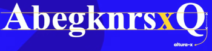
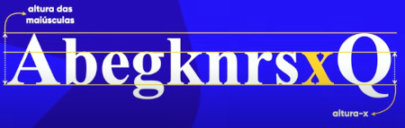
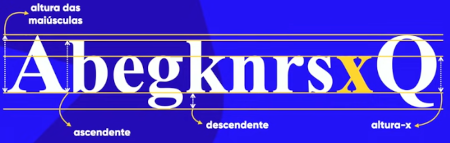
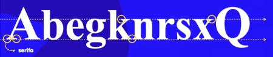
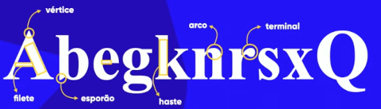
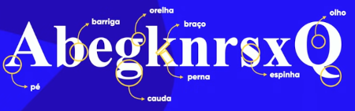

Anatomia dos Tipos
Quando se trata desse tema, tipo significa em resumo como será desenhada cada letra. Exemplo:

Já anotomia significa que será analisado cada parte dessas letras, como tamanho e altura. Afim de conhecer e compreender um pouco mais das medidas envolvidas na construção e no desenvolvimento de cada tipo de fonte.
Altura x
A letra "x" é o ponto departida para a construção de todas as fontes. Ela vai definir qual é a altura base de todas as letras minusculas.

Altura das Maiúsculas
Proporcionalmente a altura das minúsculas determinada pela altura x, existe também um parâmetro que determina a altura das letras maiúsculas.Exemplo:

Altura dos vazamentos
A altura dos vazamentos é tudo o que esta para fora da altura x e da altura das maiúsculas, que consideram apenas as linhas que foram traçadas na vertical. Observe os vazamentos que ocorreram nas letras: "b" , "k" e "g" minúsculas e na letra "Q" maiúscula.

Observe que quando o vazamento é para cima o nome da altura desse vamento é ascedente e quando o vazamento é para baixo o nome dado a para definir a altura desse vazamento é descendente.
A altura das letras somando todas as demais alturas é conhecida como altura do corpo. É importante salientar que todos os itens apresentados, descritos e exemplificados acima são itens métricos.
Anatomicos Geometricos
Serifas
Algumas fontes possuem serifas que são pequenos traços nas terminações de algumas letras, a principal função delas é criar uma linha imaginaria para ajudar o celebro na leitura. Observe o exemplo:

Componentes anatômicos geomêtricos
Segue os nomes de alguns componêntes gemêtricos encontrados em algumas fontes:

Componentes anatômicos
Segue um exemplo de mais alguns componentes anatõmicos dos glifos:
